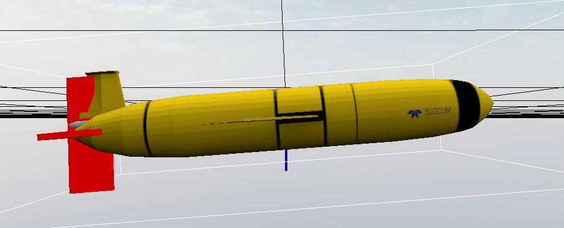
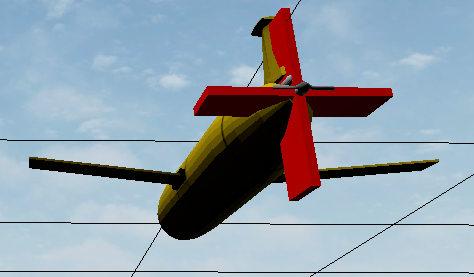

DAVE · ROS 2 · GAZEBO · 5인 팀 프로젝트
서로 다른 회피 알고리즘을
같은 수중 환경에서 검증하다
실기체 반복시험의 제약을 해결하기 위해 SITL 공통환경을 먼저 구축했습니다. 저는 환경 통합과 4-fin 위협 어뢰의 제어·유도를 맡고, 팀 모듈이 독립적으로 개발될 수 있도록 데이터 경계를 정리했습니다.
- 기간
- 2026.07 — 2026.08
- 팀 구성
- 5명, 어뢰·회피·제어 분담
- 담당
- 공통환경·위협 어뢰
- 기술
- C++, ROS 2, Gazebo, DAVE

왜 SITL부터
시작했는가
실기체를 확보하기 전에 알고리즘과 인터페이스를 반복 검증할 공통 기준이 필요했습니다.
프로젝트의 목적은 실제 어뢰 성능이나 명중률을 정밀 재현하는 것이 아니었습니다. 동일한 수중 물리환경에서 유도 방식과 접근 조건을 바꾸며 BlueROV 회피 로직의 반응을 비교하는 것이 먼저였습니다. 최종 방향은 보드를 포함한 HITL로 정하되, 하드웨어 연결 이전에 오류를 분리할 수 있도록 SITL을 선행했습니다.
완료한 SITL 성과와 진행 중인 HITL 범위를 구분해 기록했습니다.
공통환경과
담당 범위
기존 DAVE 자산을 처음부터 다시 만들기보다, 목적에 맞게 분석하고 수정·연결했습니다.
- 01수중 월드 통합
DAVE 수중 월드에 BlueROV와 위협 어뢰를 함께 배치하고 ROS–Gazebo Bridge로 상태와 구동기 토픽을 연결했습니다.
- 02위협 어뢰 모델 변경
Slocum의 큰 주익을 제거하고 프로펠러와 상하좌우 4-fin을 구성했습니다. SDF의 visual, collision, link, joint와 유체 플러그인을 나눠 확인했습니다.
- 03제어·유도 계층 구현
Keyboard, Pure Pursuit 기반 Simple Tracking, 3차원 Proportional Navigation과 roll 안정화·actuator mixer를 구현했습니다.



인터페이스를
함께 정하다
누가 무엇을 계산할지 먼저 나누자, 팀원들이 각자의 알고리즘에 집중할 수 있었습니다.
초기에는 회피 모듈에서 어뢰의 예상 충돌 시간과 위치를 요청했습니다. 하지만 어뢰가 이 값을 확정하면 상대 UUV의 회피 정책과 동역학까지 가정하게 됩니다. 회의를 통해 책임 경계를 다시 그려, 어뢰는 실시간 odometry를 제공하고 회피 모듈이 자체 모델로 충돌을 예측하도록 변경했습니다.
01Gazebo 상태어뢰·BlueROV 위치와 자세
02실시간 Odometry공통 메시지와 좌표계
03회피 모듈자체 모델로 충돌 예측
04제어 명령추진기·Fin 동작 반영
ROS가 익숙하지 않은 팀원의 피드백을 받아 초기화, publisher·subscriber와 callback을 계산 코드에서 분리하고 필요한 데이터만 받을 수 있는 노드·인터페이스를 제공했습니다. 또한 의존성 설치와 빌드를 자동화하고, 여러 터미널의 실행 과정을 5단계 명령으로 표준화했습니다. 설정과 시행착오는 README에 남겨 재현 가능성을 높였습니다.
측정으로 찾은
통합 병목
평균 동작만 보지 않고, 오래된 상태가 사용되는 순간과 CPU를 점유하는 대기 방식을 수치로 확인했습니다.
불필요한 1,000 Hz 경로 제거
사용하지 않는 JointState가 ROS–Gazebo 데이터 경로를 점유하면서 어뢰 odometry의 최대 수신 간격이 약 330 ms까지 늘어났습니다. 발행·브리지·구독 경로를 함께 제거한 뒤 약 100 Hz 상태 입력과 최대 12 ms 간격을 확인했습니다.
Busy-wait 제거
20 Hz 제어 주기를 기다리는 동안 한 코어를 계속 점유하던 구조를, 다음 주기까지 남은 시간만 대기하도록 변경했습니다. 같은 30초 유도 시험에서 CPU 사용률을 102.7%에서 2.4%로 낮추고 Real-time factor를 약 0.62에서 1.00으로 회복했습니다.
330 → 12 msOdometry 최대 수신 간격
102.7 → 2.4%어뢰 제어 노드 CPU
0.62 → 1.00Real-time factor
물리 모델의 원인 분리
직진 입력에서도 pitch와 yaw가 함께 나타나자 gain부터 바꾸지 않고, 추력선과 무게중심·프로펠러 관성을 나눠 확인했습니다. 과도한 프로펠러 축 관성을 수정한 동일 조건에서 pitch는 남았지만 비정상 yaw는 약 121배 감소했습니다.


검증 결과와
남은 과제
성공한 동작뿐 아니라, 유도 방식이 바뀌었을 때 드러난 회피 알고리즘의 한계도 결과로 남겼습니다.
- 기능시험 Keyboard 모드에서 프로펠러와 4-fin의 방향·부호를 확인했습니다.
- 기본 추적 Simple Tracking에서 움직이는 BlueROV를 따라가는 동작을 확인했습니다.
- 팀 통합시험 PP 방식 위협에서는 BlueROV의 회피 동작을 확인했습니다.
- 한계 확인 PNG 방식에서는 BlueROV가 대부분 피격되어 위협 유도법에 따라 회피 난이도가 크게 달라짐을 확인했습니다.
명중률이나 회피 성공률을 통계적으로 산출한 시험은 아닙니다. 현재는 ESP32·Teensy·CAN 단위시험을 거쳐 양방향 HITL 폐루프로 확장하고 있습니다.
MANTA GitHub 저장소 ↗